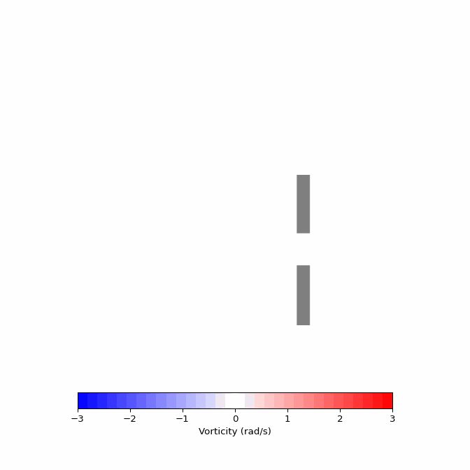
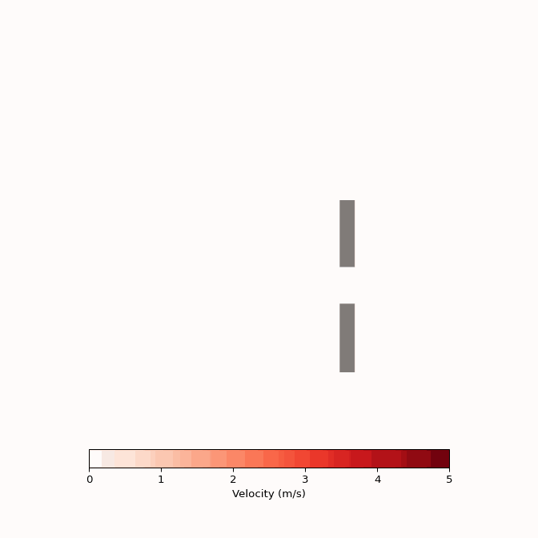

# imports for physics
from phi.physics.advect import rk4 # pre-existing rk4 ode solver
from phi.jax.flow import * # faster implementation of numpy
# imports for visualizations
from matplotlib.animation import FuncAnimation
import matplotlib.pyplot as pltFluid Simulations With PhiFlow
Fluid Simulation
Physics
Python
For my computational physics final, I utilized a physics engine to conduct fluid simulations.
Introduction
During my undergraduate education at Bates College, one of my final classes was Computational Physics. In this course, we delved into various techniques and software packages to create comprehensive physics simulations. Among the many fascinating topics we covered, I found advection and diffusion particularly intriguing. These concepts revolve around the movement of particles through a field and how they gradually dissipate their energy across the entire system. The significance of these concepts became evident when we explored scenarios like the way temperature spreads to equalize disparities in a system. Later, I drew the connection about how crucial these ideas were in the context of fluid simulations, which ultimately planted a goal in the back of my mind. This goal, that I acted on by making it the subject of my final project, was to create and run my own fluid simulation.
From the outset, I aimed to make my project versatile. I wanted users to be able to create a grid of empty space and populate it with objects that the fluid must navigate according to the simulation conditions. After extensive research, it became clear that “PhiFlow” was the most comprehensive library to accomplish this goal. PhiFlow is a Python library specifically designed for fluid dynamics simulations, offering a wide range of functions for efficiently computing the necessary mathematics and physics involved in the simulation process. As the project progressed, I discovered several ingenious techniques used by PhiFlow, which I’ll delve into later in this blog post.
To prepare myself for this project, I revisited our class notes and Jupyter notebooks, particularly those on 1D diffusion and advection. The transition to the two-dimensional analogue seemed straightforward conceptually but more computationally demanding. Armed with a grasp of the fundamentals and after thoroughly reading the user documentation PhiFlow provided, I embarked on my exciting journey into computational fluid dynamics.
Problem Statement And Approach
My project’s objective was to create a user-defined environment, or simulation domain, where individuals could place objects and define the initial vector field of the fluid within the domain. The simulation would then progress in time, capturing snapshots of the evolving vector field for visualization. Although my project didn’t target a specific application, I believed it could serve as a foundation for addressing future questions or investigations due to its generality. Again, to accomplish this, I relied on PhiFlow’s useful and efficient functions, which are extensively documented on thier website.
Importing Libraries
Surprisingly, the code requires only a few libraries to be installed to get started and experiment with it on your own. While each of these libraries downloads a range of version-specific additional packages for actual execution, the setup process is relatively painless.
Methods
Diving into the specifics, I set out to identify the key features essential for my implementation. In this section, I’ll break down each stage of the methods used to address this challenge. To begin, I’ll explore how to define the critical components of the simulation, which are primarily driven by user inputs. These inputs encompass various parameters, such as the fluid’s speed and direction as it enters the system, the specific shape and size of the simulation domain, and the duration, measured in time steps, for the simulation to run before concluding and generating an animation. Each of these aspects involves numerous specific details, which I’ll elaborate on in the upcoming subsections.
Simulation Parameters
While each of these parameters may seem relatively self-explanatory, their implications are significant. Increasing the number of time steps or the size of the simulation domain, denoted as “X_LEN” and “Y_LEN,” will result in longer computation times. For the example case, I’ve kept these values relatively small to ensure manageable processing times. Another crucial parameter is the “DIFFUSION_CONSTANT,” which indirectly determines the rate at which velocity in a given cell disperses into its neighboring constituents. In this case, a higher value corresponds to a longer time for velocities to disperse across the system. Given that air is not very viscous and easily moves at low speeds, I’ve set the constant at 0.01.
# set environment parameters
N_TIME_STEPS = 150
X_LEN = 300
Y_LEN = 100
# set wind parameters
MAGNITUDE = 0.1
ANGLE = 0 * np.pi
DIFFUSION_CONSTANT = 0.01Simulation Domain
I utilize the PhiFlow library to create a “StaggeredGrid” for storing the velocities at each discrete point within the simulation domain. These StaggeredGrids are tensors designed to store velocities on each face of the grid rather than at its centers. This configuration simplifies handling boundary conditions. Additionally, I set the extrapolation to “BOUNDARY,” enabling velocities to flow in and out of the simulation environment instead of being confined strictly within the domain. Within this staggered grid, the resolution is determined using “X_LEN” and “Y_LEN.”
However, apart from defining the main environment, we also need to establish a separate wind grid that will impose its effects on the velocity grid. This approach streamlines future computations, especially when dealing with complex geometric objects that obstruct the flow. Within this wind grid, we create an inflow, serving as the source of our wind. By segregating this inflow from the other two grids, we gain better control over how it interacts with the environment. This includes adjusting parameters such as the inflow’s strength, duration, and shape. Since it will directly interact with the wind grid, I instantiate it with the same boundaries and resolution.
# create simulation environment's velocity grid
velocity = StaggeredGrid(
values=(0, 0),
extrapolation=extrapolation.BOUNDARY,
x=X_LEN,
y=Y_LEN,
bounds=Box(x=X_LEN, y=Y_LEN)
)
# create wind container velocity grid
wind = CenteredGrid(
values=(0.0, 0.0),
extrapolation=extrapolation.BOUNDARY,
x=X_LEN,
y=Y_LEN,
bounds=Box(x=X_LEN, y=Y_LEN)
)
# compute inflow velocity components
X_SPEED = MAGNITUDE * math.cos(ANGLE)
Y_SPEED = MAGNITUDE * math.sin(ANGLE)
# create inflow velocity grid
inflow = (X_SPEED, Y_SPEED) * CenteredGrid(
values=SoftGeometryMask(
Sphere(
x=25,
y=50,
radius=10
)
),
extrapolation=0.0,
bounds=wind.bounds,
resolution=wind.resolution
)Adding Objects
The PhiFlow simulation is capable of accepting a list of objects that define the coordinates of entities within the environment. These objects serve as reference points around which the simulation operates, and they also determine where boundary conditions are applied following advection and diffusion.
For the current case, I’ve created a list containing two “Obstacle” instances that I plan on experimenting with. The “Obstacle” class is a predefined component in PhiFlow, designed to seamlessly interact with boundary conditions. An added benefit of utilizing an “Obstacle” is its convenience in defining geometries such as boxes or cylinders. One can specify x and y coordinates, along with any additional parameters necessary to provide a minimal description of an objects position and geometry. In the future, I hope to expand on this concept to create more intricate object geometries. For now, I’ve defined two rectangles positioned approximately two-thirds of the way across the screen, creating a narrow passageway to the opposite side of the simulation.
Furthermore, I’ve generated a boolean array consisting of ones and zeros, serving as a mask to determine where objects will appear in the final render. This step involves creating a large array of zeros with the same shape as the simulation grid and selectively setting portions of it to 1, corresponding to the position of the user-defined objects.
# grid for object positions
OBJECTS = [Obstacle(Box(x=(190, 200), y=(0, 40))), Obstacle(Box(x=(190, 200), y=(60, 100)))]
# mask for displaying objects on plots
OBJECTS_BOOL = np.zeros(shape=(Y_LEN, X_LEN))
OBJECTS_BOOL[61:100, 191:200] = 1
OBJECTS_BOOL[0:40, 191:200] = 1Time Stepping Function
This next section holds paramount importance, as it defines the function responsible for computing changes in the velocity and pressure fields over small time increments. The general process involves advection and diffusion, enabling velocities to propagate in their respective directions while gradually dispersing their magnitudes across neighboring cells.
Given that I’ve created multiple separate grids, I compute their changes separately before combining them to obtain the final snapshot of the system at a given time. To begin, I initiate the process by advecting the wind grid and introducing additional velocity from the inflow. At this point in the loop, one could implement a time check, perhaps to reduce inflow velocity over time. However, for the sake of simplicity, I’ve left it unchanged. Following that, I diffuse the wind velocities based on the specified diffusion coefficient. In this case, I employ the “mac_cormack” method for advection due to its versatility, particularly with more turbulent fluids like gases.
Moving forward, I introduce the wind velocities into the overall velocity grid. I achieve this by first advecting the current system so that it is at the same time instant as the wind velocities. Next, I resample the wind grid onto the velocity grid and simply add their vector components. This ensures alignment and precision in introducing velocities. For advection within the container velocity environment, I utilize the RK4 integrator, known for its precision in time stepping use cases. This integrator analyzes how the field changes in four sub-intervals over the total time difference and then computes a weighted average of these results. This ultimately yields a smoother and more accurate transition from the first to the second time period. RK4 is widely employed for solving differential equations, a subset of which are related to fluid dynamics. In this context, we employ the “semi_lagrangian” method, known for its versatility and overall effectiveness as an advection routine for general fluids.
Lastly, the velocities undergo an adjustment through the “make_incompressible” function. This function takes in the velocities and the list of objects to determine where pressure adjustments are needed and where they should be disregarded. The purpose of adjusting pressures is to incorporate object information into the simulation. By eliminating the regions that objects occupy, the pressure on specific cells increases, compelling them to exert force on feasible neighboring cells. This phenomenon creates the bouncing effect and forces the fluid to flow around obstacles. Furthermore, at low velocities, wind behaves incompressibly, contributing to a more accurate model.
@jit_compile
def step(v, w, dt=1.0):
w = advect.mac_cormack(w, v, dt) + inflow # advect wind
w_next = diffuse.implicit(w, DIFFUSION_CONSTANT, dt) # diffuse wind
v = advect.semi_lagrangian(v, v, dt, integrator=rk4) + (w_next @ v) * dt # advect velocity field and add wind
v_next, p_next = fluid.make_incompressible(v, OBJECTS, Solve('auto', 1e-5, 0, x0=None)) # adjust resulting pressures
return v_next, w_nextPlotting Functions
Now it is important to actually visualize the simulation so I define two primary methods to accomplish this.
Vorticity
The following function is designed to visualize the vorticity of the fluid, which represents the curl of the vector field. Vorticity indicates the degree to which a field is inclined to rotate; thus, a point with high positive vorticity suggests that a hypothetical pinwheel placed at that location would rapidly spin in a counterclockwise direction.
To achieve this visualization, the function takes two essential arguments: the velocity field and the list of objects. It proceeds by directly computing the curl of the vector field and then generates a plot with a color bar, employing a meaningful color palette to illustrate the intricate flow patterns. Additionally, the function leverages the object array by filling the regions occupied by objects with a gray color to signify their presence.
Running this code on various snapshots in time results in an animation of the field’s evolution over time. This animation is the project’s ultimate goal and I find the visuals quite astonishing.
def plot_vorticity(v_field, objects):
"""Function to visualize vorticity"""
# calculate vorticities
vorticity = field.curl(v_field)
vort_field = vorticity.values.numpy("y,x")
# populate plot
plt.imshow(vort_field, cmap='bwr', clim=(-3, 3), origin='lower')
cbar = plt.colorbar(shrink=0.7, location='bottom')
plt.imshow(objects, cmap='binary', alpha=0.5*(objects > 0))
# format plot
cbar.set_label('Vorticity (rad/s)')
plt.gca().set_aspect('equal')
plt.axis('off')
plt.gca().invert_yaxis()
plt.tight_layout()Magnitude
While visualizing vorticity is a common approach in fluid dynamics, I also have a curiosity about the actual velocities experienced by particles within the field. Fortunately, this is relatively straightforward because the velocity field inherently encodes all this information. By extracting the x-velocity and y-velocity components, we only need to apply the Pythagorean theorem to derive a single representative quantity. I refer to this quantity as the “absolute velocity,” and it’s technically computed by summing the squared values of the two component velocities.
Other than this calculation, the rest of the code remains the same, offering the same functionality as the previous function.
def plot_velocity(v_field, objects):
"""Function to visualize absolute velocity"""
# calculate absolute velocities
cen_velocity = v_field.at_centers()
abs_vel = (cen_velocity[0].values.numpy('y,x') ** 2 + cen_velocity[1].values.numpy('y,x') ** 2) ** 0.5
# populate plot
plt.imshow(abs_vel, cmap='Reds', clim=(0, 5), origin='lower')
cbar = plt.colorbar(shrink=0.7, location='bottom')
plt.imshow(objects, cmap='binary', alpha=0.5*(objects > 0))
# format plot
cbar.set_label('Velocity (m/s)')
plt.gca().set_aspect('equal')
plt.axis('off')
plt.gca().invert_yaxis()
plt.tight_layout()Results
I proceed to run the simulation for the predefined “N_TIME_STEPS” number of iterations. By preserving the data that defines the velocity field at each time step, I can subsequently utilize the plotting functions to generate a series of visualizations for each method. To facilitate this, I initialize a list to store all the velocity field data at each time point.
# list to store velocity data throughout simulation
velocity_data = [velocity]
# use step function to update velocity and pressure
for i in range(N_TIME_STEPS):
velocity, wind = step(velocity, wind)
# save updated velocity field
velocity_data.append(velocity)Fluid Vorticity
Compiling all the data into frames and then generating an animation produces visually appealing results while also conserving space on the servers hosting the website. I accomplish this by harnessing a helpful Matplotlib function that enables the creation of an animation, which can be saved as a GIF and seamlessly integrated into the webpage layout. The chosen Matplotlib function requires a predefined update function responsible for generating the plot associated with a given frame number. This frame number conveniently corresponds to the index required to fetch the correct slice of velocity field data from the larger list.
def update(frame, velocity_data, objects):
"""Function to update vorticities for each time step"""
plt.clf() # clear previous frame
velocity = velocity_data[frame] # read in velocity data
plot = plot_vorticity(velocity, objects) # generate new frame
return plot
# prep figure
fig, axs = plt.subplots(1, 1, figsize=(7, 7))
# create animation and pass velocity/object data to plotter
gif = FuncAnimation(fig, update, frames=N_TIME_STEPS, repeat=True, fargs=(velocity_data, OBJECTS_BOOL))
# save animation
gif.save('vorticity.gif', writer="pillow", fps=10)Presented below is the resulting animation.

Fluid Velocity
Following a very similar procedure, I now call the “plot_velocity” function to yielding the alternative visualization of absolute velocities for the same simulation.
def update(frame, velocity_data, objects):
"""Function to update absolute velocities for new time step"""
plt.clf() # clear previous frame
velocity = velocity_data[frame] # read in velocity data
plot = plot_velocity(velocity, objects) # generate new frame
return plot
# prep figure
fig, axs = plt.subplots(1, 1, figsize=(7, 7))
# create animation and pass velocity/object data to plotter
gif = FuncAnimation(fig, update, frames=N_TIME_STEPS, repeat=True, fargs=(velocity_data, OBJECTS_BOOL))
# save animation
gif.save('velocity.gif', writer="pillow", fps=10)Again, featured below is the resulting GIF.

Discussion
In summary, I have outlined a straightforward process for creating sophisticated aerodynamic simulations using the PhiFlow library. By defining the simulation domain, additional component vector fields, and incorporating objects into the environment, one can achieve detailed and fluid-like motion despite discretizing the domain into numerous grid cells. The flexibility to adjust various constants allows generation of both turbulent chaotic flows or smoother, wave-like simulations. Modifying boundary conditions also enables exploration of intriguing phenomena, such as the eddy-like effects that occur as a plume curls along a back wall. This particular example demonstrated the fluid’s interaction with narrow corridors and its response upon opening into a larger space.
The tools presented in this post offer countless possibilities for experimentation. One area of particular interest is investigating the aerodynamics of my undergraduate institution, Bates College, known for its windy campus. I’m eager to explore the potential causes, suspecting that the long pathways lined with dormitories may effectively funnel wind gusts directly into the student walkways.
For questions or concerns, please feel free to provide feedback using the form below or reach out via the contact information I’ve provided.